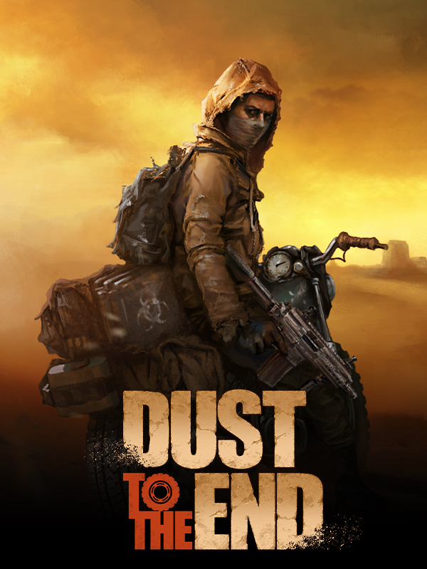

Dust to the End
Dust to the End
Details
|  | |
| Playtime | Not Played |
| Last Activity | Never |
| Added | 12/30/2023 6:40:47 |
| Modified | 12/31/2023 8:33:09 |
| Completion Status | Not Played |
| Library | Steam |
| Source | Steam |
| Platform | PC (Windows) |
| Release Date | 8/11/2020 |
| Community Score | |
| Critic Score | |
| User Score | |
| Genre | Adventure Indie Role-playing (RPG) Simulator Strategy |
| Developer | ZJOY GAME |
| Publisher | 2P Games ZJOY GAME |
| Feature | Single Player |
| Links | Steam Official Twitch YouTube Discord Epic |
| Tag | |
Description
Join a caravan of merchants to cross the unforgiving sands. Negotiate and barter to gain riches through trade. Build and defend your settlement, developing new industries from the scratches of the old world. Fight and kill your enemies and the strange creatures that inhabit the wasteland – or attack and plunder unsuspecting victims in this kill-or-be-killed merciless world.

Decades ago, a world-scale nuclear conflict destroyed human civilization as we knew it. The scant survivors hid in underground shelters and spent near a century in hiding. When the radiation dissipated enough for the ground to be safe, many groups of survivors resurfaced again and began re-colonizing the world, reconstructing civilization… to some extent: the human race failed to learn from the mistakes that led to their downfall. History started repeating very quickly, as new powers emerged in the wastelands – in a world where resources were scarce and far apart, growing settlements, petty warlords and roaming bands clashed in constant strife for land, food, water and other resources.
You grew up in Shelter 507, living a safe life (if dull and stagnate) until a day, not long ago, when your leaders and elders decided to open up the doors finally – sick of living buried, but also full of hope for the potential of the new world. That hope was cut short with rusty blades through your family's necks. Later on, you discovered the killers were members of a human trafficking organization who called themselves 'the Black Death'. But at that moment they were just like walking nightmares, coming from the sun-scorched exterior to kill everyone you had known and loved for your whole life. Somehow, you managed to flee and survive and were nurtured back to health in a nearby settlement. But nothing comes for free in this new world, and you'll have to earn your due…
Decades ago, a world-scale nuclear conflict destroyed human civilization as we knew it. The scant survivors hid in underground shelters and spent near a century in hiding. When the radiation dissipated enough for the ground to be safe, many groups of survivors resurfaced again and began re-colonizing the world, reconstructing civilization… to some extent: the human race failed to learn from the mistakes that led to their downfall. History started repeating very quickly, as new powers emerged in the wastelands – in a world where resources were scarce and far apart, growing settlements, petty warlords and roaming bands clashed in constant strife for land, food, water and other resources.
You grew up in Shelter 507, living a safe life (if dull and stagnate) until a day, not long ago, when your leaders and elders decided to open up the doors finally – sick of living buried, but also full of hope for the potential of the new world. That hope was cut short with rusty blades through your family's necks. Later on, you discovered the killers were members of a human trafficking organization who called themselves 'the Black Death'. But at that moment they were just like walking nightmares, coming from the sun-scorched exterior to kill everyone you had known and loved for your whole life. Somehow, you managed to flee and survive and were nurtured back to health in a nearby settlement. But nothing comes for free in this new world, and you'll have to earn your due…
KEY FEATURES
- Lead a merchant caravan through the unforgiving wasteland, selling and buying more than 100 kinds of goods in a dynamic economy where supply and demand constantly affect prices
- Explore a vast semi-open post-apocalyptic world map where monsters, beasts, bandits and other caravans roam freely
- Beware the hazards and challenges that this harsh natural environment will pose to your caravan!
- Discover more than 50 cities and towns, each with different sizes, facilities and trade goods
- Fight turn-based battles with 9 categories of weapons and dozens of special skills
- Hire new mercenaries for your caravan, each with their own personality, which determines the mercenary's mood and team status, which in turn affects the team's combat effectiveness and attitude
- Become a leader: explore bunkers, establish and operate underground bases, develop factories and facilities and buy or hire civilian assistants. Do whatever it takes to increase the economic output of your settlement
- Wasteland-style design, with more than 40 exquisite hand-made character drawings
- Multiple endings, different dialogue choices will affect the plot direction and the final ending